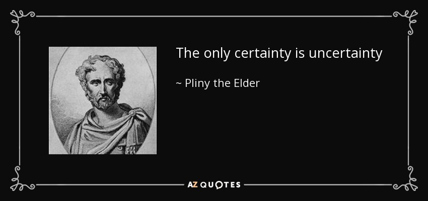
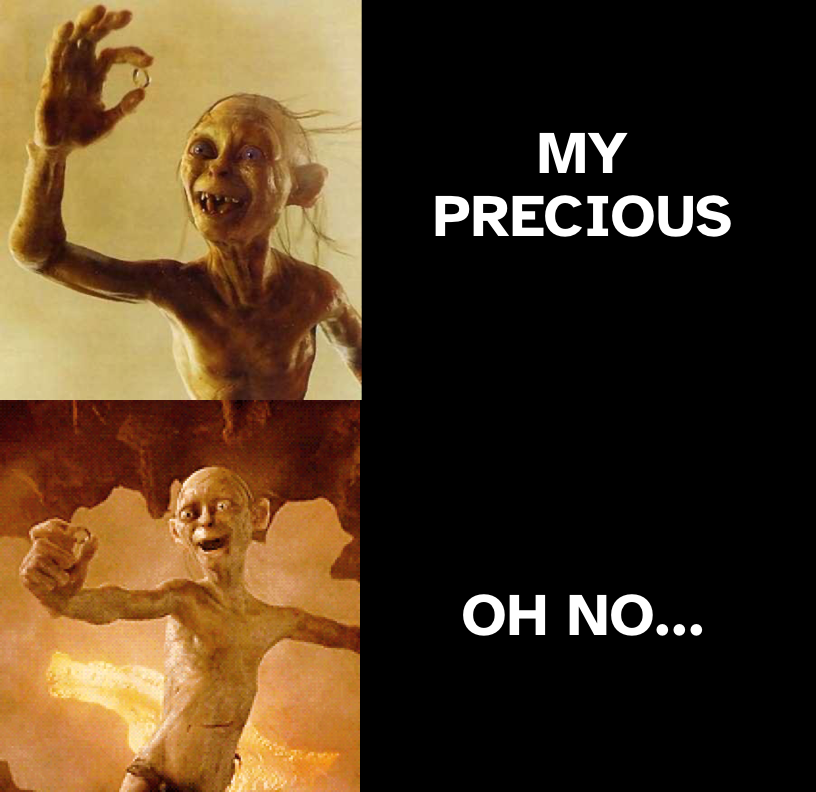
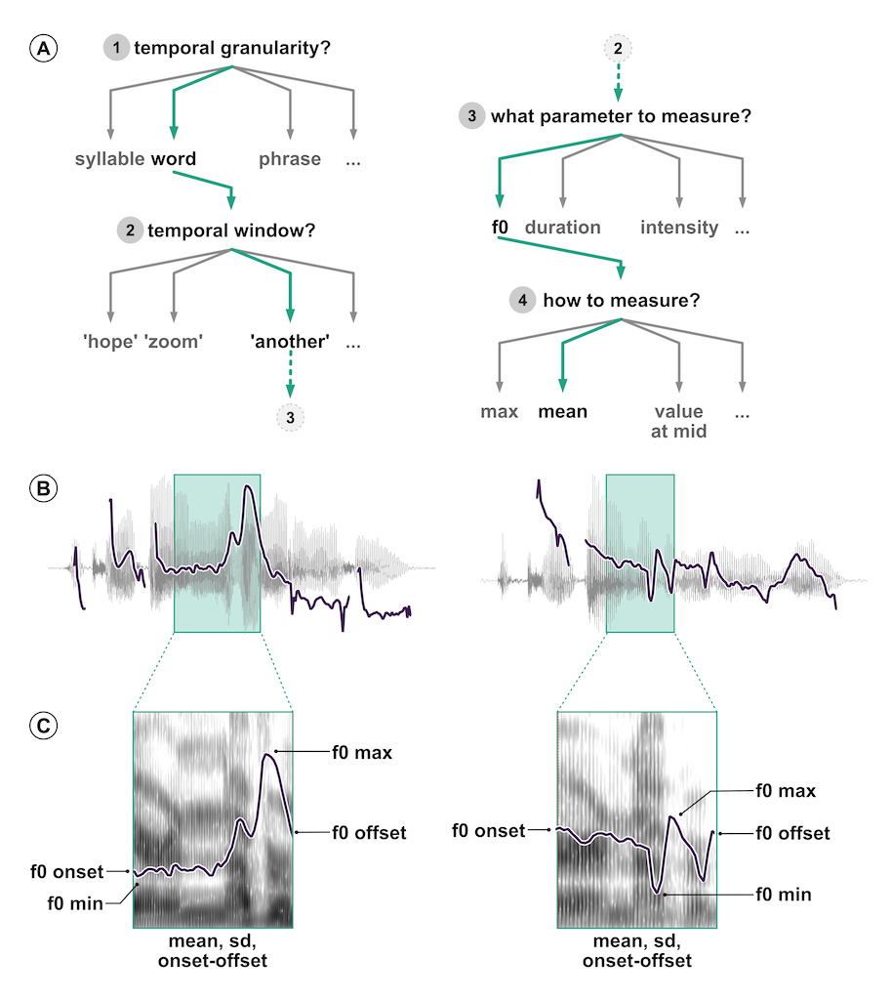

Research context

0.1 Data analysis


The numbers have no way of speaking for themselves. We speak for them. We imbue them with meaning.
— Nate Silver, The Signal and the Noise
0.2 Inference process

Imbuing numbers with meaning is a good characterisation of the “inference process”.
We have a question about something.
Let’s imagine that this something is the population of British Sign Language signers.
We want to know whether the cultural background of the BSL signers is linked to different pragmatic uses of the sign for BROTHER.
But we can’t survey the entire population of BSL signers.
NOTE: Population can be a set of anything, not just a specific group of people. For example, the words in a dictionary can be a “population”; or the antipassive constructions of Austronesian languages; or …
0.3 Inference process

We take a sample from the population.
This is our empirical data (the product of observation).
How do we go from data/observation to answering our question?
We can use inference.
Inference is the process of understanding something about a population based on the sample (aka the data) taken from that population.
0.4 Inference is not infallible
However, inference based on data does not guarantee that the answers to our questions are right/true.
In fact, any observation we make comes with a degree of uncertainty and variability.
EXTRA: Check out this article: https://www.scientificamerican.com/article/if-you-say-science-is-right-youre-wrong/
EXTRA: Find out about Popper’s view of falsification and fallibilism.
0.5 Uncertainty and variability

So we have to deal with:
Uncertainty in any observation of a phenomenon.
Variability among different observations of the same phenomenon.
class: center, middle, inverse

Guess what it is…
class: center middle inverse
1 Statistics as a tool to deal with uncertainty and variability
Statistics helps us quantifying uncertainty and controlling for variability.
1.1 What is statistics?

EXTRA: Check out the etymology of statistics here: https://en.wiktionary.org/wiki/statistics#Etymology_1.
Photo by Charles Deluvio on Unsplash
1.2 What is statistics?
Statistics is the science concerned with developing and studying methods for collecting, analyzing, interpreting and presenting empirical data. (From UCI Department of Statistics)
Statistics is the technology of extracting information, illumination and understanding from data, often in the face of uncertainty. (From the British Academy)
Statistics is a mathematical and conceptual discipline that focuses on the relation between data and hypotheses. (From the Standford Encyclopedia of Philosophy)
Statistics as the art of applying the science of scientific methods. (From ORI Results, Nature)
Statistic is both a science and an art.
It is a science in that its methods are basically systematic and have general application and an art in that their successful application depends, to a considerable degree, on the skill and special experience of the statistician, and on his knowledge of the field of application.
—L. H. C. Tippett
2 But…
all that glisters is not gold

2.1 What statistics is NOT
Statistics is not maths.
Statistics is not about hard truths.
Statistics is not a purely objective endeavour.
Statistics is not a substitute of common sense and expert knowledge.
Statistics is not just \(p\)-values and significance testing.
2.2 Many Analysts, One Data Set

Is there a link between player skin tone and number of red cards in soccer?
29 independent analysis teams.
69% of the teams reported an effect, and 31% did not.
21 unique types of statistical analysis.
The observed results from analyzing a complex data set can be highly contingent on justifiable, but subjective, analytic decisions.
—Silberzahn et al 2018

Do speakers acoustically modify utterances to signal atypical word combinations?
- 30 independent analysis teams (84 signed up, 46 submitted an analysis, 30 submitted usable analyses).
- 109 individual analyses.
- 52 unique measurement specifications, 47 unique model specifications.
Nine teams out of the thirty (30%) reported to have found at least one statistically reliable effect (based on the inferential criteria they specified). Of the 170 critical model coefficients, 37 were claimed to show a statistically reliable effect (21.8%).
—Coretta et al, 2023
2.3 THE “NEW STATISTICS”
Photo by Francesco Gallarotti on Unsplash
2.4 The New Statistics
It addresses three problems (Cumming 2014):
Published research is a biased selection of all research.
Data analysis and reporting are often selective and biased.
In many research fields, studies are rarely replicated, so false conclusions persist.
It proposes, among others, these solutions:
Promoting research integrity.
Shifting away from statistical significance to estimation.
Building a cumulative quantitative discipline.
This course will introduce you to the New Statistics approach incrementally.
2.5 The Bayesian New Statistics
The classical approach to statistics is the frequentist method.
- Null hypothesis significance testing (NHST) and p-values.
Bayesian statistics provides researchers with more appropriate and more robust ways to answer research questions.
- Reallocation of belief/credibility across possibilities.